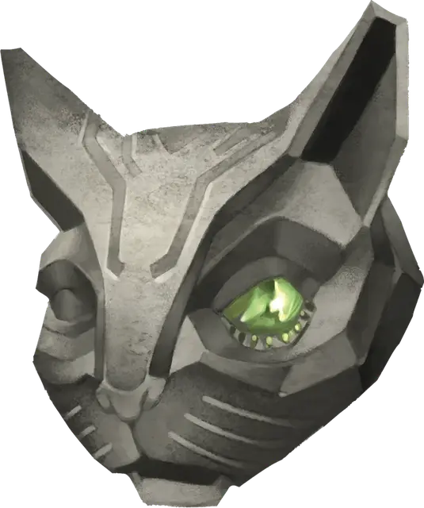

Камень удачи
Stone of Good Luck (Luckstone)
Чудесный предмет, необычный (требуется настройка)

Рекомендованная стоимость 400 зм
Пока этот полированный агат при вас, вы обладаете бонусом +1 к проверкам характеристик и спасброскам.
Главная / Редакция 2024 / Магические предметы
Stone of Good Luck (Luckstone)
Чудесный предмет, необычный (требуется настройка)

Рекомендованная стоимость 400 зм
Пока этот полированный агат при вас, вы обладаете бонусом +1 к проверкам характеристик и спасброскам.
Открыть в справочнике с поиском по разделу, фильтрами и экраном мастера.